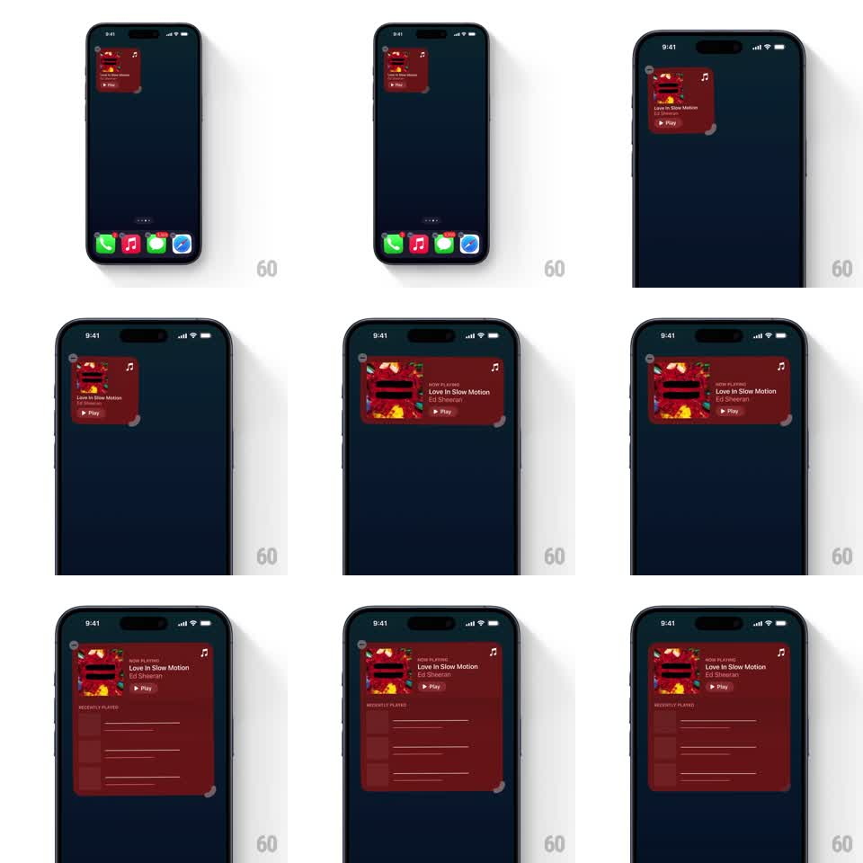

Media
Frame-by-frame

Rebuild this interaction 1:1: iOS home-screen widget resizing - in edit mode, dragging the widget's corner handle morphs a music widget between small, medium, and large sizes, content reflowing live (a Recently Played list appearing only at large).

Rebuild this interaction 1:1: iOS home-screen widget resizing - in edit mode, dragging the widget's corner handle morphs a music widget between small, medium, and large sizes, content reflowing live (a Recently Played list appearing only at large). ## Integration Integration: stack-agnostic spec - springs given as stiffness/damping, timed motions as duration + curve; map every value to your framework and animation library of choice. ## Scene Dark home screen with a dock; a red music widget (album art, "Love In Slow Motion", "Ed Sheeran", Play button, music-note glyph). Edit mode: a small grabber dot on the widget's bottom-right corner. Large size adds a "RECENTLY PLAYED" section with track rows. ## Motion spec Pattern: corner-drag resize with live reflow. - Long-press enters edit mode: widget gets the corner handle, icons jiggle. - Drag the handle: the widget's width/height follow the finger continuously (rubber-banded between the 3 size classes); content scales with the container, album art anchored top-left. - Crossing a size-class threshold: content reflows with a 200ms ease - medium adds the Now Playing row, large reveals the Recently Played list rows fading in with 40ms stagger. - Release: widget springs to the nearest size class (spring ~300/26, ~300ms); handle fades out on edit-mode exit. - Wallpaper and dock stay static. ## Calibration - Between thresholds the container free-follows; only the CONTENT snaps at thresholds. - Recently Played rows belong to large only - they collapse away below it. ## Reduced motion Widget steps between sizes without free-follow drag. ## Don't miss - The handle is only visible in edit mode. - Album art never stretches - it crops/scales uniformly during free-follow.